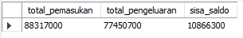

Personal Project : Cashflow D4 Keperawatan Gigi Poltekkes Kemenkes Tasikmalaya 2023/2024
Introduction
Given a dataset containing financial information for the D4 Dental Nursing Program at the Health Polytechnic of the Ministry of Health in Tasikmalaya.
There are two separate files containing information about various payments and expenditures from July 2023 to July 2024.
1. Ask
1.1 Objectives
- How to show the total income, expenses, and current balance current balance (range July 2023 – July 2024)
- Identify the students who have not paid the cash fund, and specify how many months and in which months they have missed the payments.
1.2 Task
Create some visualizations or dashboard with the best type of chart.
2. Prepare
I was given data in Google Spreadsheet with two separate files. The first file contains financial transactions from July to December 2023, and the second file contains financial transactions from January to July 2024. First, I need to download both datasets. The data is stored in .xlsx format.
First Dataset: KEUANGAN D4 KEPGI 2023.xlsx
In the original 2023 Financial Transactions dataset, there are 5 worksheets:
- History Respon
This sheet contains data from Google Form responses by students when making payment transactions.
- MPLS
This sheet contains data on students who made payments for MPLS.
There are 3 columns: Nama Mahasiswa, Tanggal Pembayaran, Jumlah.
- Kas Semester 1
Contains data on students' cash payments.
There are 8 columns: NIM, Nama Mahasiswa, Jul-23, Aug-23, Sep-23, Oct-23, Nov-23, Dec-23.
- Pemasukan
Contains other income data besides cash payments.
There are 7 columns: NIM, Nama Mahasiswa, Pembayaran Buku, Pembayaran Makan, Pembayaran Batik, Pembayaran Praktek, Total.
- Pengeluaran
There are 8 columns: Tanggal Pengeluaran, Keterangan, Qty, Harga, Jumlah, Ongkos Kirim, Total Pembayaran, Total Pengeluaran.
Second Dataset: KEUANGAN D4 KEPGI 2024.xlsx
In the original 2024 Financial Transactions dataset, there are 3 worksheets:
- Kas 2024
Contains data on students' cash payments.
There are 14 columns: Student ID, Student Name, Jan-24, Feb-24, Mar-24, Apr-24, May-24, Jun-24, Jul-24, Aug-24, Sep-24, Oct-24, Nov-24, Dec-24.
- Pembayaran Buku 2024
There are 3 columns: Student ID, Student, Payment Amount.
- Pengeluaran
There are 4 columns: Date, Month, Expenditure Name, Amount.
3. Process
To achieve the objectives, I applied several techniques during the data preprocessing stage for this dataset. In this case, I aimed to consolidate the data into two worksheets within a single file: one for income and one for expenses. The following steps were taken to ensure that the data used is relevant, allowing for the creation of visualizations that meet the specific needs.
Removing unnecessary columns
Filling the null (blankspaces) with values (zero)
Changing the tanggal column into date format
Merging the kas_2023 table with the kas_2024 table and combining all the data that represents income
Transforming the table from wide format to long format
Merging kas and income that are already in long format
*Performing the same steps for the expense table.
After completing all the steps, a file named final_cleaned_data.xlsx was created, containing the data ready for use. This file includes two tables: the income table and the expense table.
Below are the details of the data types for each table.
Income Table :
| # |
Field |
Data Type |
| 1. |
NIM |
STRING |
| 2. |
Nama Mahasiswa |
STRING |
| 3. |
Tanggal |
DATE |
| 4. |
Bulan |
STRING |
| 5. |
Tahun |
STRING |
| 6. |
Kategori |
STRING |
| 7. |
Jumlah |
INT |
Expense Table :
| # |
Field |
Data Type |
| 1. |
Tanggal |
DATE |
| 2. |
Bulan |
STRING |
| 3. |
Tahun |
STRING |
| 4. |
Keterangan |
STRING |
| 5. |
Jumlah |
INT |
4. Analyze
In the analysis process, I attempted to use MySQL Workbench and also created visualizations with Tableau.
4.1 Show total income, total expenses, and remaining balance
Here is the query to answer the first question, which displays the total income, total expenses, and remaining balance.
Explanation :
- Subquery for Income (jumlah_pemasukan): The first Common Table Expression (CTE) named jumlah_pemasukan calculates the total income by summing up the jumlah column from the pemasukan table.
- Subquery for Expenses (jumlah_pengeluaran): The second CTE named jumlah_pengeluaran calculates the total expenses by summing up the jumlah column from the pengeluaran table.
Final Select Statement:
- p.total_pemasukan represents the total income.
- g.total_pengeluaran represents the total expenses.
- The difference between total income and total expenses (p.total_pemasukan - g.total_pengeluaran) is calculated as sisa_saldo, which represents the remaining balance.
This is the output :

4.1 Students who have not paid the cash fund
To find the students who have not paid the cash fund, we first need to determine how many students have not made their payments in a specific month and year.
Here is the query to display that information:
Explanation :
- SELECT bulan and tahun: The query selects the month (bulan) and year (tahun) to group the data by these time periods.
- COUNT(nama_mahasiswa) AS jumlah_belum_bayar: This counts the number of students (nama_mahasiswa) who haven't made their payment. The result is aliased as jumlah_belum_bayar to indicate the total number of unpaid students for each month and year.
- WHERE kategori = "kas" AND jumlah = 0: Filters the data to include only those records where the payment category is "kas" and the payment amount (jumlah) is zero, meaning the students haven't paid.
- GROUP BY bulan, tahun: Groups the results by both the month and the year, so that the query can count the number of unpaid students for each specific period.
- ORDER BY jumlah_belum_bayar DESC: Orders the results in descending order based on the number of students who haven't paid, with the months/years where the most students are behind on payments appearing first.
This is the output :
Based on the results, there are students who haven't paid their dues from January to July 2024. Since this issue only occurs in 2024, I decided to display the students, the number of months they haven't paid, and the specific months they missed. The list is ordered by the students who have the most unpaid.
Here is the query to display that information:
Explanation :
- nama_mahasiswa: Selects the names of the students.
- COUNT(nama_mahasiswa) AS jumlah_belum_bayar: Counts the number of months each student hasn't paid, and the result is labeled as jumlah_belum_bayar.
- GROUP_CONCAT(bulan ORDER BY FIELD(bulan, 'January', 'February', 'March', 'April', 'May', 'June', 'July') SEPARATOR ', ') AS bulan: Compiles a list of months in which each student hasn't paid, ordered from January to July, and combines them into a single string separated by commas.
- WHERE kategori = "kas" AND jumlah = 0: Filters the results to include only those records where the payment category is "kas" and the payment amount is zero, indicating non-payment.
- GROUP BY nama_mahasiswa: Groups the data by student name, so the query can calculate the total unpaid months for each student.
- ORDER BY jumlah_belum_bayar DESC: Orders the results in descending order based on the number of unpaid months, showing students with the most unpaid months first.
This is the output :
SUMMARIES
- Based on the data summary from July 2023 to July 2024 :
- Total Income: Rp88.317.000
- Total Expenses: Rp77.450.700
- Remaining Balance: Rp10.866.300
- There are students who haven't paid their cash fund from January until July 2024. Here is the number of students who haven't paid, categorized by month :
- January : 4 students
- February : 8 students
- March : 11 students
- April : 16 students
- May : 34 students
- June : 37 students
- July : 39 students
5. Share
I made the visualization with Tableau. The content can filter the student who dont paid the cash fund by month and year. This is the result :

If we change the month or year "Jumlah", "Belum Bayar" and "List Mahasiswa Belum Bayar" will change according to the data.